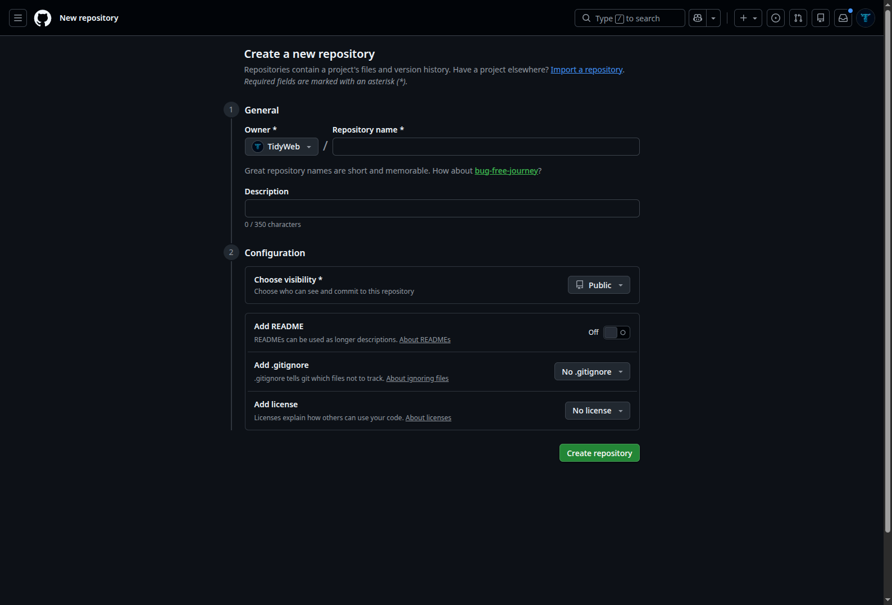
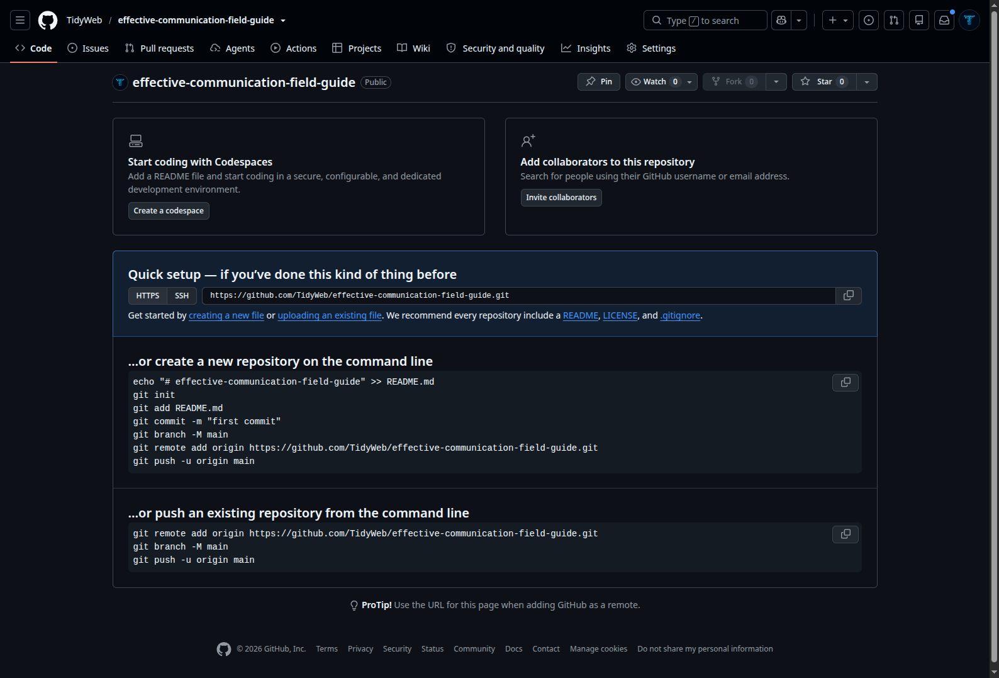
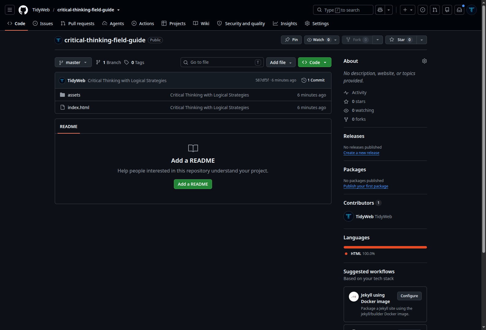
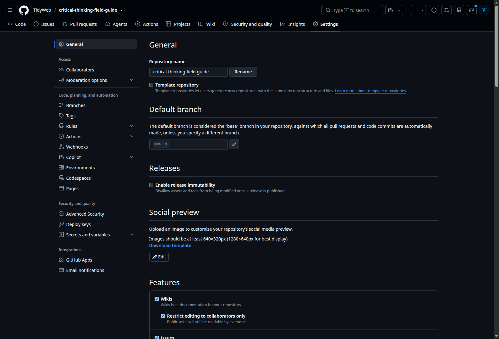
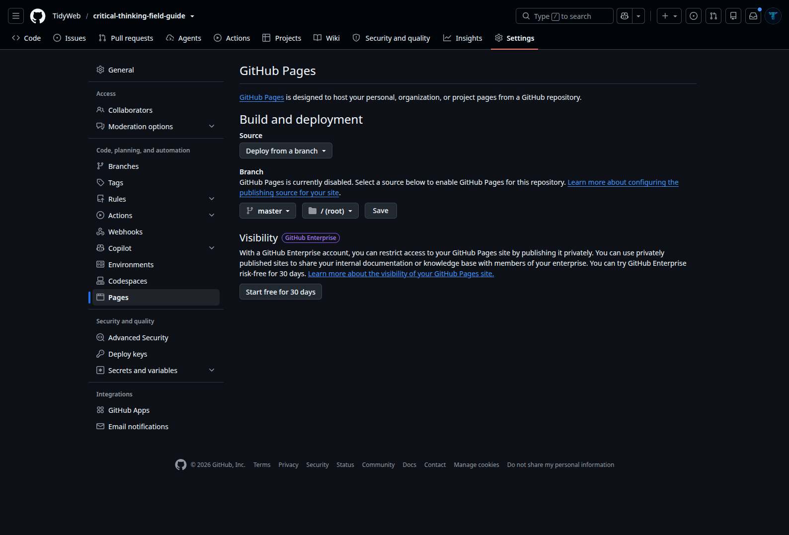
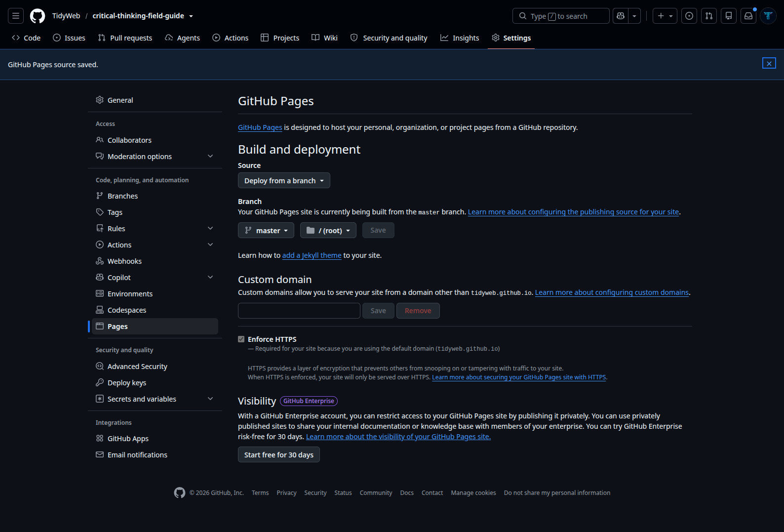
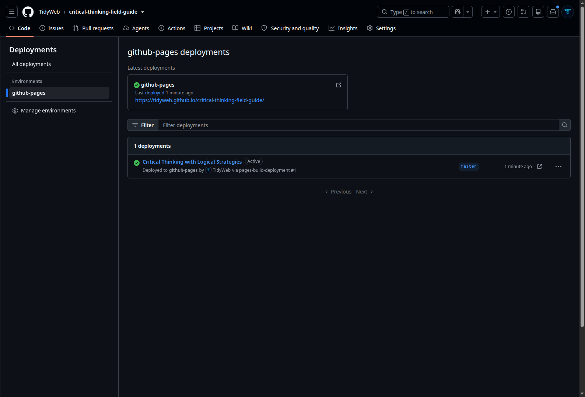

Git and GitHub
Git is version control. GitHub is an online home for Git repositories. We communicate with Git through a command-line interface, or CLI: a text-based application called Konsole or Terminal on Linux, Terminal on macOS, and Windows Terminal or PowerShell on Windows. This reference begins before the commands—with the account and identity GitHub expects—then follows a project from its first local snapshot to its first push online.
The Mental Model
Git tracks changes to files over time. Every time you tell it to, it takes a snapshot of your project. You can go back to any snapshot. You can share snapshots with other people. That is the whole thing.
Think of it as a save-game system for code. Every commit is a save point. If something breaks, you load an earlier save.
You give Git instructions by typing commands into the command-line interface—the CLI—and pressing Enter or Return. Every Git command shown in this guide goes there.
| Zone | What it contains |
|---|---|
| Working directory | The files you are editing right now. Git watches but does not save yet. |
| Staging area | Files you have marked as ready to be saved in the next snapshot. |
| Repository | The permanent record of every snapshot you have committed. |
A commit should represent one logical change, not a day's work.
Good commit message: Add filtering to the sales notebook
Bad commit message: stuff or changes or final final v3
The message is for future you. Be specific.
One-Time Setup
The commands in this guide are entered into a command-line interface, often shortened to CLI. It is a text-based application where you type an instruction and press Enter or Return to run it.
The application has different names on different systems. On Linux it may be called Konsole or Terminal. On macOS it is commonly Terminal. On Windows, use Windows Terminal or PowerShell.
Commands operate from the folder the CLI is currently opened in. Before running a Git command, make sure the CLI is in the project folder—or, when cloning, in the parent folder where you want Git to create the new project folder.
Create a free personal account at github.com. Your GitHub username must be available and becomes part of your public profile and repository addresses, so choose something you are comfortable sharing.
Verify the account email and protect the account with a strong, unique password and two-factor authentication. GitHub Free is enough for public learning projects.
Before making commits, tell Git what author name and email to write into them. These are commit details, not your GitHub sign-in details. Your Git author name does not have to match your GitHub username.
Enter each of the following commands into your CLI, pressing Enter or Return after each one.
Publish a New Local Project
Use this route when you already have a local project on your computer and want GitHub to host it. You will move between two places: the GitHub website, where you create and publish the online repository, and your CLI, where local Git saves and sends your files.
First, open the local project folder in your file manager. Open your CLI—Konsole, Terminal, Windows Terminal, or PowerShell—in that project folder. This matters because Git applies the commands to the folder the CLI is currently working in.
Follow the steps in order. Labels beginning GitHub website are buttons and menus to use in your browser. Commands in dark boxes go into your CLI.
macOS · Finder
- Open Finder and navigate to the location where the project should live.
- Choose File → New Folder, or press Shift + Command + N. Name the folder and press Return.
- Put every file that belongs to this project inside that folder, then open the folder.
- Choose View → Show Path Bar. At the bottom of Finder, Control-click the project folder in the path bar and choose Open in Terminal.
- If that option is unavailable, open Terminal, type cd followed by one space, drag the project folder into the Terminal window, then press Return.
Windows · File Explorer
- Open File Explorer with Windows key + E and navigate to the location where the project should live.
- Select New → Folder, or press Ctrl + Shift + N. Name the folder and press Enter.
- Put every file that belongs to this project inside that folder, then open the folder.
- Click the File Explorer address bar, type wt, and press Enter. Windows Terminal opens with this folder as its working location.
- On systems that show it, you can instead right-click empty space inside the folder and choose Open in Terminal.
Linux · File Manager
- Open your file manager and navigate to the location where the project should live.
- Create a New Folder, give it a clear name, and open it.
- Put every file that belongs to this project inside that folder.
- In KDE Dolphin, choose Tools → Open Terminal or press Shift + F4. Konsole opens in the folder currently shown.
- Other Linux file managers often provide Open in Terminal when you right-click empty space inside the folder.
Sign in at github.com. In the upper-right corner, select the + menu, then New repository.
Choose the Owner, enter a short Repository name, add an optional description, and choose Public or Private. For a GitHub Pages site on GitHub Free, choose Public.
Keep Add README switched Off. Keep Add .gitignore set to No .gitignore. Keep Add license set to No license. Do not select any of them out of habit.
These options are useful when a project begins on GitHub. Here, however, your project and its first commit already begin on your computer. Selecting one of these options would create a separate first commit online and can make the first push more complicated.

Run this once inside a project folder to tell Git to start tracking it. It creates a hidden .git folder that stores all the version history. You never touch the .git folder directly.
Shows you which files have changed, which are staged, and which are untracked. Run this constantly. It costs nothing and tells you exactly where you are.
Marks a file as ready to be included in the next commit. git add filename.py stages one file. git add . stages everything that has changed in the current folder. Staging is reversible. Committing is permanent.
Saves everything in the staging area as a permanent snapshot with a message. The -m flag lets you write the message inline. git commit -m "your message here" Every commit gets a unique ID. You can always return to it.
Immediately after creating an empty repository, GitHub shows a Quick setup box. Make sure HTTPS is selected, then use the copy button beside the address ending in .git.

If you return to the repository later, open its main Code page, select the green Code button, choose Local then HTTPS, and use the copy button. Do not copy the address from the browser's address bar when GitHub already provides the HTTPS Git address.
Use this once when the project began locally and you later created an empty GitHub repository for it. Paste the HTTPS address you copied from GitHub in place of the example address.
remote add records a destination, origin is the conventional short name for it, and the URL identifies the GitHub repository.
Before the first push, read the first line of git status. If it says On branch master, your branch name is master. If it says On branch main, your branch name is main.
Do not copy main merely because an example uses it. The first-push command must name the branch that actually exists locally.
The first push commonly includes -u, which records the upstream relationship for later pushes.
If git status reports master, use the first command below. If it reports main, use the second. After that relationship is recorded, later uploads from the same branch can usually use git push.
Return to the repository page in your browser and refresh it. The Code tab should now show your project files and latest commit message.
Above the file list, open the branch selector. It should show the same branch you pushed—master or main. If the files are visible only on one of those branches, that is the branch you must choose as the GitHub Pages source below.

Use this only when the repository contains a website you want people to visit. Your publishing folder needs an index.html, index.md, or README.md entry file.
On the repository page, select Settings. If that tab is hidden, open the repository's dropdown menu and select Settings. In the left sidebar under Code, planning, and automation, select Pages.

Under Build and deployment, set Source to Deploy from a branch. In Branch, choose the branch that actually contains your website—master or main. Choose / (root) when index.html is at the top level of the repository; choose /docs only when the website's entry file is inside a top-level docs folder.

After saving, GitHub displays a confirmation and begins processing the files. This is not an instant promise that the site is already live: wait for the build to complete, then check for the published address.

You can find the live address in several places:
| Route | What to look for |
|---|---|
| Settings → Pages | When the build finishes, GitHub shows the published address and usually a Visit site button. |
| Repository → Code | Return to the main repository page. In the right-hand column, open Deployments, then select github-pages. |
| Deployment details | The completed deployment page shows a green success mark, the live URL, and an external-link button. |
| Predict the usual project URL | For a project site, the usual pattern is https://USERNAME.github.io/REPOSITORY/. Confirm it through GitHub before sharing it. |

/ (root) means the top level of the selected branch: the first file list you see on the repository's Code tab. It does not mean the root of your computer, and it does not rename or replace master or main.
Shows the commits made so far, newest first. Each entry includes its generated ID, author, date, and human-readable message. Press q to leave the log view.
Get an Existing GitHub Project
| Method | What you receive | Can Git update it? |
|---|---|---|
| Clone | The project, its Git history, and a recorded remote named origin. | Yes. It remains connected to the GitHub repository. |
| Download ZIP | Only a snapshot of the files at that moment. | No. It has no Git history or remote connection. |
On the GitHub repository page, select the green Code button. GitHub offers several connection choices, commonly HTTPS, SSH, and GitHub CLI.
For this beginner route, choose HTTPS and use GitHub's copy button beside the address. SSH needs keys to be configured first, and GitHub CLI requires a separate command-line tool and sign-in. They are useful alternatives later, but neither is required here.
Now open your CLI—Konsole, Terminal, Windows Terminal, or PowerShell—in the parent folder where you want the new project folder to be created. Type git clone, add one space, paste the copied HTTPS address, then press Enter or Return:
git clone https://github.com/USERNAME/REPOSITORY.git
Git runs the command and creates a new folder named after the repository. Inside it, Git downloads the project and its history and records the GitHub repository as origin. Do not run git init inside the clone.
Update a Project Previously Cloned
Open the terminal inside the folder created by git clone. A ZIP download cannot follow this update route because it has no repository history or recorded remote.
Check whether you have local edits before updating. A clean working tree means there is nothing local waiting to be protected. If changed or untracked files appear, stop and decide what should happen to them before pulling.
git pull fetches new commits from the current branch's upstream and integrates them into the local branch. When the clone is clean and still follows its original branch, this is the ordinary update command.
The Everyday Local-to-GitHub Loop
After checking your work with git status, follow these three phases from left to right. Each command has one clear job.
SELECT
Choose your changes
Marks the changed files for the next snapshot.
SAVE
Create the snapshot
Saves the staged changes on your computer.
PUBLISH
Send it to GitHub
Uploads your committed work to GitHub.
| Step | Command |
|---|---|
| Check what has changed | git status |
| Stage the files you want to save | git add filename or git add . |
| Commit with a clear message | git commit -m "describe what changed" |
| Send committed work to the connected branch | git push |
A commit that lives only on your local machine is at risk. Push to GitHub at the end of every working session. GitHub is the backup. Your local machine is not.
GitHub vs Git
Git is the version control system. It runs on your machine. It has no interface.
GitHub is a website that hosts Git repositories online. It adds collaboration, visibility, and backup to what Git does locally.
You can use Git without GitHub. You cannot use GitHub without Git.
| Feature | What it means in practice |
|---|---|
| Remote backup | Your commits are safe even if your machine fails. |
| Portfolio | Your public repositories are visible to employers. |
| Collaboration | Others can clone, contribute, and review your work. |
| Pull requests | A formal way to propose changes before they are merged. |